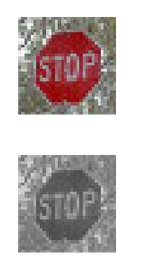
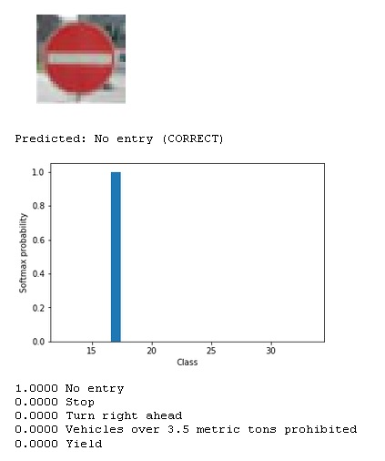

#Traffic Sign Recognition
##Writeup Template
###You can use this file as a template for your writeup if you want to submit it as a markdown file, but feel free to use some other method and submit a pdf if you prefer.
Build a Traffic Sign Recognition Project
The goals / steps of this project are the following:
###Here I will consider the rubric points individually and describe how I addressed each point in my implementation.
###Writeup / README
####1. Provide a Writeup / README that includes all the rubric points and how you addressed each one. You can submit your writeup as markdown or pdf. You can use this template as a guide for writing the report. The submission includes the project code.
You're reading it! and here is a link to my project code
###Data Set Summary & Exploration
####1. Provide a basic summary of the data set. In the code, the analysis should be done using python, numpy and/or pandas methods rather than hardcoding results manually.
Pandas is the library that I used to get summary statistics of traffic signs data sets. I got the following results:
| Data | Result |
|---|---|
| Training set | 34799 |
| Validation set | 4410 |
| Test set | 12630 |
| shape of a traffic sign image | (32, 32, 3) |
| unique classes or labels in the data set | 43 classes |
####2. Include an exploratory visualization of the dataset.
Here is an exploratory visualization of the data set. There are 16 images from different classes.
###Design and Test a Model Architecture
####1. Describe how you preprocessed the image data. What techniques were chosen and why did you choose these techniques? Consider including images showing the output of each preprocessing technique. Pre-processing refers to techniques such as converting to grayscale, normalization, etc. (OPTIONAL: As described in the "Stand Out Suggestions" part of the rubric, if you generated additional data for training, describe why you decided to generate additional data, how you generated the data, and provide example images of the additional data. Then describe the characteristics of the augmented training set like number of images in the set, number of images for each class, etc.)
First, I decided to convert the images to grayscale.
The following pictures are before and after grayscaling.

After that I normalized the image data because it is more familiar for the net. It removes unnecessary data and leaves only the important part.
Here are some examples of normalized images:
The difference between the original data set and the augmented data set is the fact that the augmented data is easier to understand and to predict because it has only the important data about the image, without any unnecessary data.
####2. Describe what your final model architecture looks like including model type, layers, layer sizes, connectivity, etc.) Consider including a diagram and/or table describing the final model.
I created the Model with the following layers:
| Layer | Description |
|---|---|
| Input | 32x32x3 RGB image |
| Convolution | Input 32x32x1, Output 28x28x32 |
| RELU | |
| Pooling | |
| Convolution | Input 14x14x32, Output 10x10x34 |
| RELU | |
| Pooling | |
| Fully Connected | Input 1600, Output 120 |
| RELU | |
| Fully Connected | Input 120, Output 84 |
| Activation | |
| Fully Connected | Input 84 |
####3. Describe how you trained your model. The discussion can include the type of optimizer, the batch size, number of epochs and any hyperparameters such as learning rate.
For model training I used 25 EPOCHS with a BATCH SIZE of 129.
####4. Describe the approach taken for finding a solution and getting the validation set accuracy to be at least 0.93. Include in the discussion the results on the training, validation and test sets and where in the code these were calculated. Your approach may have been an iterative process, in which case, outline the steps you took to get to the final solution and why you chose those steps. Perhaps your solution involved an already well known implementation or architecture. In this case, discuss why you think the architecture is suitable for the current problem.
My final model results were:
If an iterative approach was chosen:
If a well known architecture was chosen:
For this project, I chose a classic CNN Architecture as in the next figure:
With one exception: I added two extra activations beetween the first, second and third fully connected layers.
This architecture has the following layer types:
It starts with two convolution layers. The second convolution has a different stride then the first one and it is used to differentiate the data and to separate the features. And by having a larger stride, I could create smaller feature maps.
I used the RELU function to activate the neurons and to introduce non-linearity in the Net.
After activating the neurons, I used the Pooling, and especially Max Pooling because I think it works better as it extracts the maximum elements which represents the most intense features.
Finally, the fully connected layers helped me to use the high-level features from the convolutions and pooling layers to classify the images in different data sets based on the inputs we had.
One change that I made was to add two activation layers between the fully connected layers to add some non-linearity and to make the Net more powerful. Otherwise it wouldn't be so good.
###Test a Model on New Images
####1. Choose five German traffic signs found on the web and provide them in the report. For each image, discuss what quality or qualities might be difficult to classify.
Here are six German traffic signs that I found on the web:
The second and last images might be difficult to predict it is taken from a lower point.
The third image can also be difficult to recognize because half of it is covered with snow.
####2. Discuss the model's predictions on these new traffic signs and compare the results to predicting on the test set. At a minimum, discuss what the predictions were, the accuracy on these new predictions, and compare the accuracy to the accuracy on the test set (OPTIONAL: Discuss the results in more detail as described in the "Stand Out Suggestions" part of the rubric).
Here are the results of the prediction:
| Image | Prediction |
|---|---|
| Speed limit 50km/h | Speed limit 50km/h |
| Right-of-way | Right-of-way |
| Slippery road | Road Work |
| Priority road | Priority road |
| No entry | No entry |
| Road Work | Road Work |
The model was able to correctly guess 5 of the 6 traffic signs, which gives an accuracy of 83.33%. I think that there where simple and complicated images and that 83.33% is a good result.
####3. Describe how certain the model is when predicting on each of the five new images by looking at the softmax probabilities for each prediction. Provide the top 5 softmax probabilities for each image along with the sign type of each probability. (OPTIONAL: as described in the "Stand Out Suggestions" part of the rubric, visualizations can also be provided such as bar charts)
Here are the predictions for every image:



From the images we see that the net guessed 5 out of 6 images. Although, I must say that the third image is pretty hard to recognize even for a human because half of it is covered with snow. It would be easier to recognize the image if it was bigger. But the snow makes the image almost half white so I understand that it is very hard to predict.
The first image was a surprise for me as I didn't expect it to guess the image because It was taken from a lower point but it performed very well and the prediction was 0.96 for it. And the remaining predictions where similar because all of them where speed limit signs.
Images 4-6 where predicted 100% correct without any other predictions.
The net performs very good.
####1. Discuss the visual output of your trained network's feature maps. What characteristics did the neural network use to make classifications?

First of all, I see that it uses lines to separate different signs. The maps 0, 4, 9, 13 and 14 have some kind of lines(black and white). It is a good feature because the traffic signs are really easier to predict if you can separate them by some kind of lines.
From feature map 11 and 15 we can see that it classifies somehow the images in two kinds, one is that has a black zone on the top and the second has the black zone on the bottom. Such a feature could predict if the sign has a triangle or a different figure.
Feature Map 5 is also interesting as it is all black. I think it is a feature to separate the signs that have a big part of them in a single color, like Main Road, No Entry, STOP Sign or No Traffic.